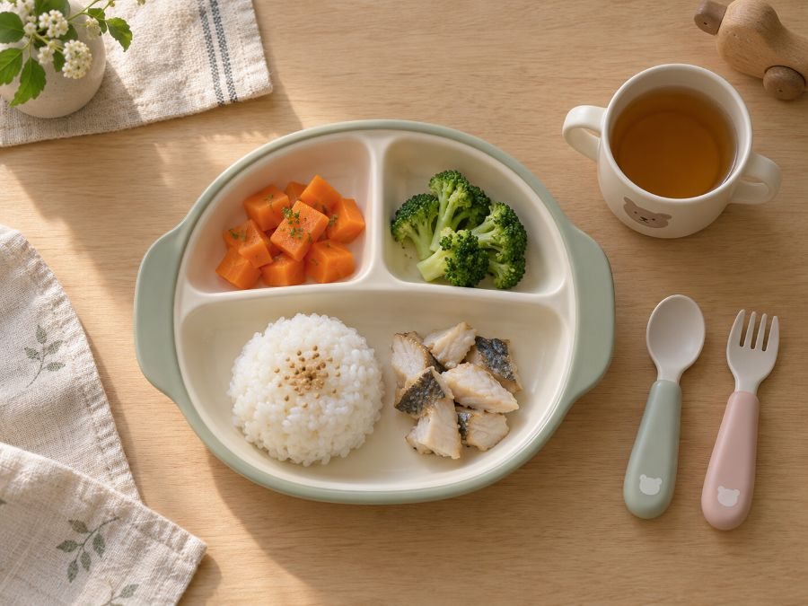

幼児食の宅配
幼児食の宅配は、
対象年齢から選ぶ。幼児食の宅配サービスを栄養士が整理しました
幼児食の宅配は、冷凍で届いてレンジで温めるだけの宅配弁当が主流です。無添加、おすすめ、安いなど探し方はさまざまですが、最初に確認するのは子どもの年齢に合うかどうかです。

結論だけ知りたい方へ
幼児食の宅配サービスは1歳半からが主流です。1歳前後なら離乳食から使えるキューブタイプ、1歳半を過ぎたら幼児食の宅配弁当を選んでください。
幼児食の宅配で先に確認すること
| 項目 | 見るところ |
|---|---|
| 対象年齢 | 1歳半からか、離乳食期からか |
| 無添加の範囲 | 何を使っていないかが書いてあるか |
| 1食の量と価格 | 食べきれる量か。1食あたりいくらか |
| スキップ・休止 | 食べない時期に止められるか |
幼児食の宅配で無添加を選ぶ
「無添加」に法律上の決まりはありません。無添加の割合を数字で書いているか、調味料の中身まで公開しているかを確認してください。冷凍の幼児食は、凍らせるので保存料が要らないつくりです。
幼児食の宅配のおすすめと比較
おすすめは家庭の条件で変わります。比較するときは、対象年齢・無添加の範囲・量・価格の4つを同じ並びで見てください。大人向けの宅配弁当を幼児に使うのは避けてください。1食の塩分が2g前後あり、幼児の1日の目安（3g未満）の大半になります。
幼児食の宅配のランキングと人気の見方
ランキングや人気順は、並び順が広告の都合で決まっていることがあります。人気かどうかより、子どもの年齢と食べる量に合うかで決めてください。1位のサービスでも、年齢が合わなければ使えません。
1歳から使える幼児食の宅配
1歳前後は、離乳食から幼児食に移っていく途中です。この時期は必要な量だけ解凍できるキューブタイプが使いやすい。1歳半を過ぎて奥歯でかめるようになったら、幼児食の宅配弁当に移ります。
幼児食の宅配弁当と宅配サービスの違い
| 呼び方 | 届き方 | 向いている使い方 |
|---|---|---|
| 幼児食の宅配弁当 | 1食ずつ冷凍で届く | 温めてそのまま出す |
| キューブタイプ | 小分けの冷凍で届く | 量を調整して組み合わせる |
| レトルト | 常温で届く | 外出・備え用 |
| ミールキット | 食材が届く | 親が作る前提 |
幼児食の宅配を安く使う
全部を宅配にすると月に数万円かかります。週2〜3回だけ置き換える、ご飯は自分で炊く、使わない週はスキップする。この3つで月3,000〜5,000円に収まります。
幼児食の宅配サービス
モグモ
初回限定セットあり1歳半から6歳向けの冷凍幼児食。管理栄養士が監修し、幼児期に必要な栄養素をカバーしています。無添加のメニューが9割以上。管理栄養士に無料で相談できるので、月齢に合わせた食事に迷う場合の窓口になります。お届け周期と食数は変更でき、スキップも可能です。
初回限定セットを見る ＞ファーストスプーン
キューブタイプ宮城県産を中心とした国産食材の離乳食・幼児食。キューブタイプなので必要な量だけ解凍できます。レンジで温めるだけ。産地を公開しているので、最初の一口に使う食材を確認できます。
内容を見る ＞